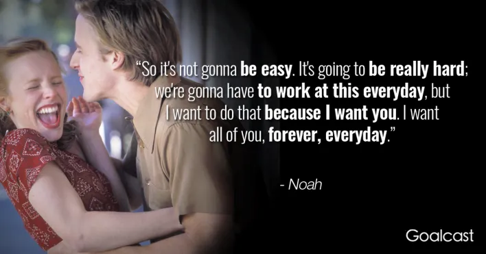

| COME HERE! |
MOVIESPACE
MOVIES YOU MIGHT LIKE FROM THIS SPACE

A WALK TO REMEMBER
"A Walk to Remember" is a love story so sweet, sincere and positive that it sneaks past the defenses built up in this age of irony.
It tells the story of a romance between two 18-year-olds that is summarized when the boy tells the girl's doubtful father:
"Jamie has faith in me. She makes me want to be different. Better."
After all of the vulgar crudities of the typical modern teenage movie, here is one that looks closely, pays attention,
sees that not all teenagers are as cretinous as Hollywood portrays them.

THE NOTEBOOK (2004)
As teenagers, Allie and Noah begin a whirlwind courtship that soon blossoms into tender intimacy.
The young couple is quickly separated by Allie's upper-class parents who insist that Noah isn't right for her.
Several years pass and, when they meet again, their passion is rekindled, forcing Allie to choose between her soulmate and class order.
This beautiful tale has a particularly special meaning to an older gentleman who regularly reads the timeless love story to his aging companion.

TALK TO ME (2022)
The film follows a group of teenagers who discover they are able to contact spirits using a mysterious embalmed hand,
only for things to go too far. Talk to Me premiered at the Adelaide Film Festival on 30 October 2022, and was released in Australia on 27 July 2023,
by Maslow Entertainment.